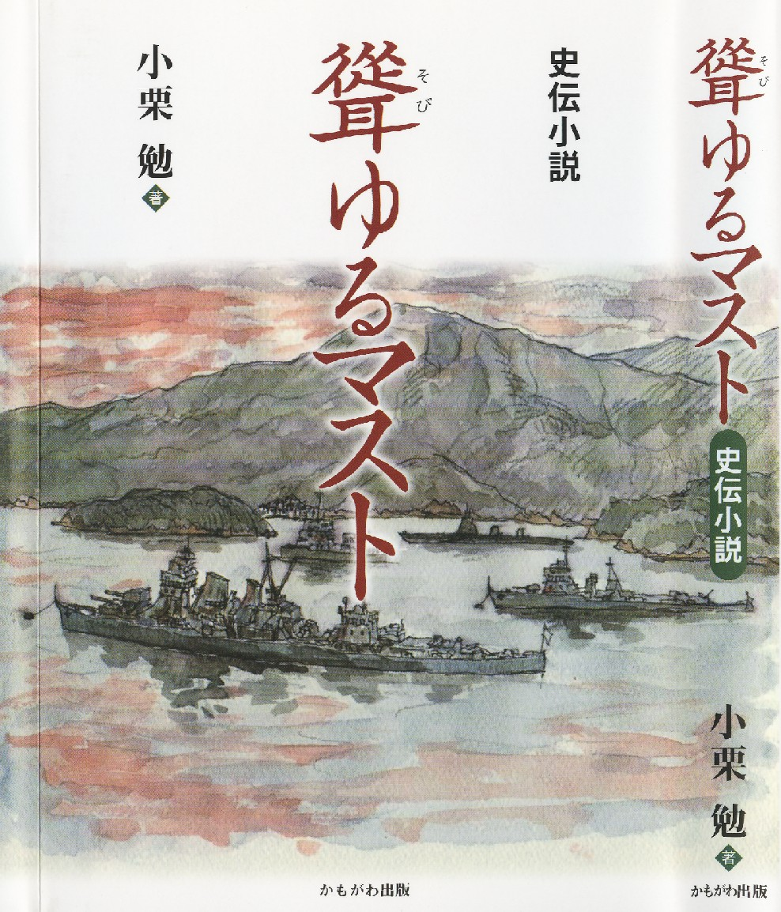
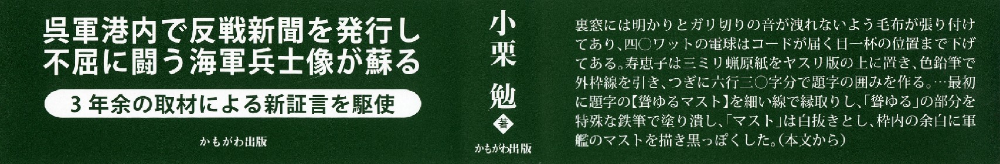
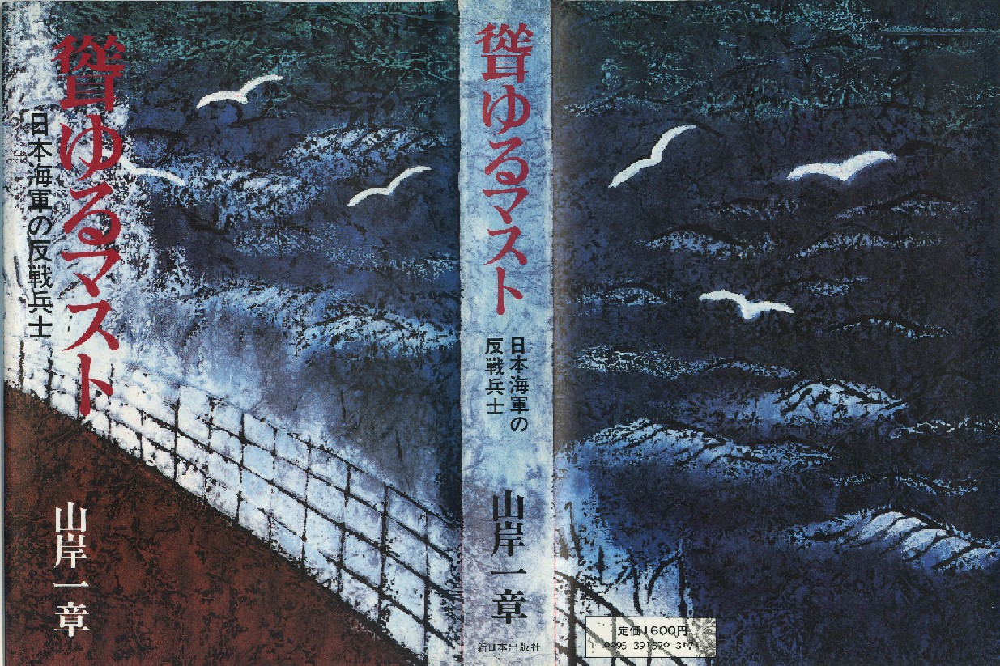
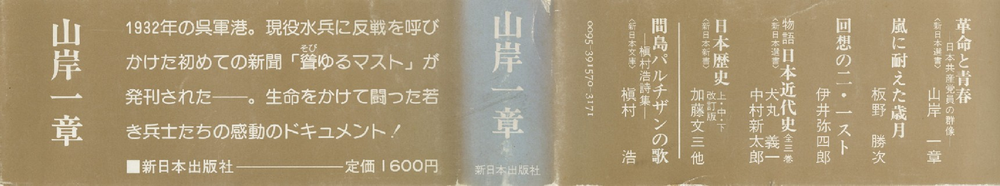

史伝小説
「聳ゆるマスト」 小栗 勉 著 （かもがわ出版 1,700円＋税）
ー 中国侵略に反対し、呉軍港で不屈の反戦活動を繰り広げた海軍兵士の物語 ー

表紙

表紙帯
全文を無料公開（pdf版）
【 自薦紹介評 】 小栗 勉
自著『聳ゆるマスト』がハードカバーの装丁で、かもがわ出版から発刊されたのは２月に入ってからである。
初刷り３千部。
（中略）
かもがわ出版は新聞広告で『聳ゆるマスト』の普及に力を入れていた。
「赤旗」１月２日付に新春広告を出し、自社の出版物のトップに『聳ゆるマスト』を、
つづいて同紙２月１５日付の下段広告欄に他の本と抱き合わせで掲載。
同月１８日付「中国新聞」に２冊だき合わせの広告を出した。
私にとって力になったのは「赤旗」２月２４日付の文化欄で
「文芸時評」を担当している文芸評論家の岩淵剛さんが、
３冊の本しか取りあげていない中で私の本の評論をしてくれたことだ。
読んでいない人もいると思うのでその全文を紹介しておきたい。
兵士が組織した「侵略戦争反対」
小栗勉著『聳ゆるマスト』（かもがわ出版）は、その戦争の時代に、
戦争に反対して兵士たちを組織した海軍兵がいたことを主題にしている。
「聳ゆるマスト」とは、１９３２年に広島県の呉軍港で、
海軍の兵士向けに発行された日本共産党の新聞のタイトルである。
以前にも、山岸一章が調査をして、１９８１年に同じタイトルでドキュメントを刊行しているが、
呉市に住む小栗は、「聳ゆるマスト」の記念碑建設の呼びかけ人の１人として、
小説の形式をとることで、当時の活動家たちの社会変革への思いを描き出した。
その中心にいた阪口喜一郎と、その周辺の人々の活動を描くことで、
１９３０年代はじめごろの日本の姿と、その中で侵略戦争に反対する人々の動きを、作者はつかもうとしている。
「満州事変」から「上海事変」へと、日本が中国への侵略をはじめようとしたときに、
海軍の中で日本共産党の新聞が発行され、公然と侵略戦争に反対したことは、記憶されなければならない。
そのための手がかりとして、この小説は書かれた。
もう少し、当時の社会や、社会変革の運動についての全体像をつかめるような記述がほしかったと思うが、
これを書かねばならないという、作者の思いが伝わってくる。
また同日付の「広島民報」に日本共産党広島県後援会会長高村是懿氏の『聳ゆるマスト』推薦の記事が載った。
その翌月の中旬頃、日本共産党本部に勤務している文化部の牛久保達男さんから電話があった。
『聳ゆるマスト』について取材したいというので、２３日にセットした。
同日の午後、呉駅に降り立った牛久保記者から携帯電話で連絡があったので、
事前に依頼していた知り合いのタクシーに乗ってもらい、自宅から少し下った場所で落ち合った。
自宅の前の坂道は狭くてタクシーを横付けできないからである。
数年ぶりに会った牛久保達男さんは相変わずダンディーな服装だった。
彼は文芸評論家で文学会の幹事でもあるので、私とは文学同盟の時代からの知り合いで、
大会や全国文学研究集会の夕食時にひらかれる懇親会でよく話をしていたから堅苦しい挨拶をする必要はない。
取材は一時間半ほどで終わり、その後はタクシーで繁華街に行き、焼き鳥屋で雑談しながら文学に関する最新の情報を仕入れた。
牛久保記者が書いた記事は「赤旗」３月２８日付の読書棚に載った。
２ページある紙面の左肩は囲み記事に似て、丸囲みで「本と人と」と題し、その下に横文字で
『史伝小説聳ゆるマスト』／小栗勉、
４段抜きの記事の左辺に名刺の長さに少し足りない幅のある横長の顔写真を載せ、
中央には縦３段を使い「共産党の水兵組織に遣る」と見出しを振ってある。
本文は記者の眼から見た呉の風景と、取材を受けたとき私が話したことが要領よくまとめられていた。
ーークルマでうねうねとした坂道を上り、途中で下車。そこからさらに歩いた山の中腹に小栗さんの自宅があります。
「三方を山に囲まれた街ですから家もこういうところにあるんですよ」
書斎からは呉湾が望めます。呉は、横須賀、佐世保と並ぶ海軍の三大軍港でした。
この軍艦内に日本共産党の水兵組織がつくられ、戦争に反対し、水兵の待遇改善を訴える
新聞「聳ゆるマスト」が発行され、読者は１００人を超えました。
本書は中心人物の阪口喜一郎の活動を描いています。
「これまで山岸一章さんの仕事がまとめられていますが、
その後阪口喜一郎の妻・梅子の生存が確認され証言を得たことなど多くの新事実が判明しました。
完全黙秘を貫いた喜一郎の遺体の引き取りめ状況など、調べていく中で、
すごいことがわかるものだなあ、と感じたこともあります」
たたきあげで二等兵曹までになった阪口の頑強な抵抗には、
「軍人としての衿待もあったのではないか」。
立ち上がる水兵たちや協力する女性たち、不屈の党の姿に、筆が冴えます。
交通労働者でしたが、５０歳のとき作家を目指して退職。
フィリピン戦線で死んだ父のことに心がいきます。
「『父の幻影』という作品を書いた時、父も山中で星空を眺めながら、
五人の子供やおふくろのことを思ったに違いないと、書きながら何度も涙がでました」
四年前、「聳ゆるマスト」記念碑建設呼びかけ人会議ができ、その一員に。
「父は石工でした。死ぬ覚悟で反戦闘争をやった阪ロとはちがいますが、
戦争に対する思いは、阪口を描いていても重なってきます」
（かもがわ出版・一七〇〇円）
（牛久保建男）
さすが新聞記者だと思った。
短い文章であったが、『聳ゆるマスト』だけでなく私の精神的内面まで描いてくれていた。
私はこの記事が気に入り、そのご普及した本に付録として記事のコピーを挟んだ。
「赤旗」記事が出た直後、中国新聞文化部の記者から電話取材があり、
４月４日付、日曜日の新聞の読書欄下段に
《郷土の本》コーナーに「反戦訴えた水兵描く」の一段見出しと
表紙写真を組み込んだ二段組の紹介記事が掲載された。
こうした新聞記事の後押しもあり、文学会呉支部の仲間や友人たち１２人が短期間にうちに１００冊以上を普及してくれた。
また本を読んだ人から電話かおり、友人にも勧めるからと追加注文してくれたケースも少なからずあった。
出版税金とカンパは総額で７万５千円に達した。
交通局時代から付き合っている元上司、文学会の仲間、「瀬戸文学通信」を愛読してくれている読者など１６人から寄せられたものである。
私の日常生活は独居老人が山麓に建つ古びた小さな日本家屋に住んでいるのとさほど変わらず、
いまは５０年来の友人からの電話が掛からない限り繁華街にでて飲むこともなく、
日中は新聞や本を読み、ときには文章を書いて日を過ごしている。
そんな男が、かもがわ出版の編集長に勧められて２０年ぶりに本を出版した。
仲間や友人たちの普及協力や、ご厚志を贈ってくれるなど考えてもおらず、
隠遁生活から舞台に立だされた感じで、なんだか急に若さが甦ったきたような気がした。
そして返書をしたためながら、持続する志をつらぬいて書き続けてきた執念が実ったのだろうか、などと考えていた。
送呈本を発送してからしばらくして、自宅には毎日のように北は青森から関東、
北陸、東海、関西、中国を経て福岡の文学仲間や取材関係者から手紙が届くようになった。
手紙の内容は出版の祝辞や礼状であったり、本を読んでの感想が書き込まれていた。
今回の手紙の特徴は作品を読了してからのものと、祝辞が数の上で桔抗していることだった。
通常、文学会に所属する中心的作家は生活をしていくための仕事以外に、『民主文学』の編集作業にかかわったり、
東京で開かれる文学カフエなどの集会、毎年地方でひらかれる文学研究集会や文学教室の講師、
所属する支部活動などの任務をこなしながら、作家であり続けるために作品を執筆する。
だから新刊を送呈したからといって本を読んでくれるとは限らず、それは一家を為した文才豊かな高齢作家でも基本的には変わらない。
２月初句に本を送呈してから４月上旬までに届いた手紙は７０通余り。
そのうちの半数は本を読了してのもので、いずれも作者冥利につきるような感想が記されていた。
しかし手紙の中には目利きの人がいて、誤字や誤植、転換ミス、大阪における昭和初期の列車の路線名、
名古屋交通局は戦前は民間企業だった、などという記述違いを指摘され、
時代考証の詰めの甘さや、校正下手を恥じなければならなかった。
今回、本を普及するなかで嬉しかったのは、文学書などあまり読まない元交通局の同僚の一人が
「おもしろうて一日半で読んだ」と言ってくれたことだ。
それに似た感想は電話をかけてきてくれた女性からも聞いた。
小林多喜二ではないが、寝転がってよめるような小説を私も意識しいたからである。
現職のとき労働組合運動で知り合った、元全医労呉支部の役員をしていた女性のＳさんは、
山口の湯田温泉でひらかれた全日本年金者組合中国ブロック支部交流集会と、
静岡市でひらかれた日本ユーラシア協会の全国大会に５冊の本を旅行バッグに詰めて
代議員として参加し、夜の自由時間になると各宿泊部屋を訪れ参加者に本の購入を訴えてくれた。
その積極的な行動は相手の心を動かしたのであろう。
帰宅した夜に彼女から２回にわたり、本はすべて完売したので明日にでも郵便口座に振り込みますという嬉しいニュースが入ってきた。
自著を買ってくれた入、とくに日ユ協会の会員の所在地は広範囲に及び、私はすべての人に礼状を出した。
そしてそれが縁となり、岩手県の事務局長の任にあり、盛岡民主文学会にも加盟しているＫさんと文通をするようになった。
そしてＳさんの勧めで本を買ってくれた見知らぬ人から感想を書いた手紙がときおり舞い込んできた。
今回の出版は自費出版ではなかったが、
かもがわ出版の三井編集長の勧めを了承した時点でそれなりの出費は覚悟していた。
それが前段に書いた１６０冊におよぶ送呈用の本代と送料だった。
それは２０年ぶりに本を出す代償であるともいえたが、
その歳月で一人の書き手としての私がどれほど成長したかを先輩や友人、読者に感じてもらうことでもあった。
本を発送した数日目の午前１０時すぎ、東京都北区在住の今崎暁巳さんから電話がかかってきた。
今崎さんは私の大先輩で、私が３５年前に文学同盟に入ってから知り合った。
私はそれまで労働運動のなかで、今崎さんが６０年から７０年代にかけて著した良質のルポルタージュ、
『伊那谷は燃えて』『友よ、未来をうたえ』『三菱帝国の神話』などを読んでいたから、
こちらから近づいて友人の一員に加えてもらったのである。
今崎さんはテレビで放映された「判決」「若者はいま歩きはじめる」などのシナリオ執筆にも関わっていた。
そしていまでも堅実な仕事をしており、著作を出すたびに送呈を受け、
昨秋には『北の砦』と題した本が届いている。
電話での話は１時間に及んだが、記憶に残っているのは、心地よく響く低音で
「いいねえ、今回の作品は。史伝小説という新しいジャンルをきりひらいたんじやないかな」という言葉だった。
それから数日たった夜、文学会岡山支部長の三宅陽介さんから電話があった。
三宅陽介さんは戦中派で、戦後は山陽新聞の記者として活躍し、現役のときから文学作品を書き、
「赤旗」に連載小説を書いたこともあり、『民主文学』に作品を掲載する常連作家でもあった。
その三宅陽介さんが、わざわざ電話をかけてきて、『聳ゆるマスト』について、今崎暁巳さんと同じように
「史伝小説という新しい分野をきりひらいたのではないか」と評価してくれたのである。
私は後輩を思いやる両氏の温情に感謝した。
ふりかえれば、のちに「多喜二・百合子賞」を受賞した山岸一章著『聳ゆるマスト』が発刊されてから３０年が過ぎた。
私が取材や史料に目を通しはじめたのは３年半前からだったが、
つぎつぎと新しい証言や史料を得ることができた。
私は一昨年の秋、執筆開始にあたり、
治安維持法で弾圧されることを怖れることなく「聳ゆるマスト」の発行に関わった人たちの
すべてを実名で作品中にとりこみ、鎮魂と顕彰の書とすることを期し、
２０年間の作家修業のすべてを投入することを決意した。
そのとき私が決めた作品の題名は「小説 聳ゆるマスト」だったが、
かもがわ出版の三井編集長の助言で「’史伝’小説 聳ゆるマスト」にすることを了承し、
今年の２月に新刊書として誕生した。
出典：「瀬戸文学通信」（2010.5 VOL.209) 日本民主主義文学会呉支部
《資料〉
１、「聳ゆるマスト」発行に至る経緯
１９２９年10月24日に発生したニューヨークの株式大暴落の余波が日本にも押し寄せ、農民・労働者の貧困層が拡大。
そうした経済恐慌を乗り切るため天皇制政府は軍部に迎合し中国への侵略戦争拡大の道をつきすすみ、
やがて中国東北部を制圧、32年３月１日に清朝の廃帝・溥儀を執政とする傀儡「満州国」を建国。
しかし国際連盟総会で１国の支持をも得ることができず、急速に国際社会から孤立するに至る。
軍事力による中国への侵略を押し進める政治と軍部の動きに危機感を持った
呉鎮守府管内に所属する兵士数名が、1930年頃、自発的に社会科学研究会を創設した。
当初の主要メンバーは阪口喜一郎（戦艦伊勢乗組・２等機関兵曹）
西川照三（２等機関兵曹）平原甚松１等兵、山口義次１等兵、若林２等兵らであった。
しかし１９３１年８月、社研メンバーは治安維持法違反容疑で呉憲兵分隊に逮捕され軍法会議にかけられ、
有罪にはならなかったが同年10月、
阪口喜一郎、西川照三、平原甚松は赤化信奉者として除隊処分に付され、
山口義次、若林は容疑不十分として原隊復帰とされた。
除隊後、５名は社会科学研究会の再建を確認したが、西川照三は故郷の三重県に帰郷。
リーダー格の阪口喜一郎らは具体的な行動を起こすためには日本共産党の指導を得なければならないと判断し、
呉工廠大量解雇事件で〈赤い本屋〉として有名になっていた市内目抜き通りにあった
田中書店に出入りし、店主の田中豊の紹介で党オルグの寺尾一幹との接触に成功する。
そして翌32年初頭に水兵細胞が誕生。
日本共産党呉軍事部水兵委員会として新聞の発行（旬刊Ｂ４版２ページ）にふみきる。
２、新聞「聳ゆるマスト」（旬刊）の発行
《第１期〉 １９３２年２月～４月（第１号～第４号まで
発行責任者 阪口喜一郎（30） 海軍予備役２等機関兵曹
投書・配布担当 平原 甚松（26） 海軍予備役Ｉ等兵
編集アドバイザー 寺尾 一幹（26） 党呉地区オルグ
ガリ切り担当 林 寿恵子（23） 寺尾の婚約者
軍隊内配布協力者
稲垣 宏（28） 海軍Ｉ等看護兵曹
北田 健二（29） 特務艦朝日乗組２等機閲兵
本村 荘重（25） 海兵団付１等兵
佐藤 彊（21） 同
発行部数 第１号 約３０部
第２号 約５０部
第３号 約７０部
第４号 約１００部
《第２期》 １９３２年10月（第５号～第６１まで）
発行責任者 木村 荘重（26） 呉海兵団満期退役１等兵
投書・配布担当 小倉 正弘（20） 軍艦白鷹乗組２等機関兵
編集アドバイザー 錦織 彦七（26） 党中国地方オルグ、出雲市出身
人材発掘担当 滝川 恵吉（26） 同
ガリ切り担当 古川 稔（24） 広島市内在性の石川茂一の推薦
助手・輸送担当 黒崎 保（18） 兄は共産青年同盟員で入獄中
呉の連絡担当 佐藤 静江（22） カフェ摩天楼の女給として勤務
車隊内配布協力者 稲垣 宏（28） 海兵団付１等看護兵曹
宮内 謙吉（32） 海軍病院３等看護兵
山下 達吉（25） 海軍予備役２等主計兵
佐藤 彊（21） 海兵団付１等兵
発行部数 第５号 約１００部余
第６号 約１５０部 印刷
３、官憲の弾圧により日本共産党組織は壊滅状態に
中央組織に潜入していたスパイ松村昇の手引きにより、
1932年10月30日に多数の党幹部が逮捕された「熱海事件」の余波は全国に波及し、
広島地方では「聳ゆるマスト」の関係者と全協の中心メンバー45名が逮捕、
うち22名が起訴され、組織は壊滅状態に陥った。
中央軍事部で活動していた阪口喜一郎と平原甚松にも官憲の手が伸びた。
1932年11月７日 平原甚松は汐入町のアジトで就寝中、
神奈川県武装警官隊に急襲され逮捕。
同 15日 阪口喜一郎は御徒町のアジトで逮捕され、数日後、
身柄を引取りにきた呉憲兵分隊に引き渡された。
４、「聳ゆるマスト」軍隊関係者の判決内容（治安維持法違反）
1933年４月19日 呉軍法会議公判は関係者への判決を下した。
小倉 正弘（23） 懲役６年
稲垣 宏（29） 懲役４年
佐藤 彊（23） 懲役４年
北田 健二（23） 懲役３年
宮内 謙吉（24） 懲役３年
山口 義次（？） 行方不明
1933年11月７日 広島地方裁判所にて判決
平原 甚松（27） 懲役３年６月
1933年12月27日 阪口喜一郎（31） 未決勾留のまま広島刑務所で獄死
1934年１月９日 広島地方裁判所にて判決
木村 荘重（27） 懲役３年
【 紹介書評 】
＝史伝小説＝ 小栗 勉著 「聳ゆるマスト」を読む
伊 藤 英 敏（日本民主主義文学会呉支部 会員）
日本民主主義文学会呉支部長の小栗勉氏が二十年ぶりに本を出版した。
戦前の軍都呉市を舞台とした史伝小説「聳ゆるマスト」である。
いち早く読む機会があったので、感想を述べたい。
同時に呉支部に所属する同人として、作品の周辺部についてまず触れたい。
同名の「聳ゆるマスト」は以前、山岸一章氏が著した作品がある。
その中にいくつか不正確な部分があると小栗氏は時々疑問を呈していたが、
それは作品批評であって、新たな著作に繋がるものではなかったと思う。
しかし、自民党安倍内閣の戦前復古の風潮の中で、二〇〇五年呉市は、戦艦大和を観光の目玉として、
「大和ミュージアム」を建設し、それが時流に乗り、見学者は四年間で五百万人を越えた。
また海上自衛隊も、隣に退役潜水艦を陸揚げし、軍事博物館として開館し、無料で公開している。
過去の戦争に深い考察を加えることなく兵器を公開するのは、
海外派兵の方向に国民を引きずり込み、慣れさせるための施策と危惧された。
これに対して呉市の民主勢力は、「大和ミュージアム」の建設に反対し、市議会に対して反対運動を進めたが、
共産党を除く全ての会派の賛成によって建設された。
そこで、復古政策への対抗軸として、身近で、価値あるテーマとして「聳ゆるマスト」が浮かびあがった。
戦争一色の染まっていた戦前の呉市で起きた、反戦運動を記録し顕彰することに意義を見出し、
三年前に「聳ゆるマスト顕彰碑」建設委員会を立ち上げた。
「聳えるマスト」は、治安維持法によって非合法化されていた共産党の呉水兵細胞(支部)が、
戦争反対を掲げて発行した新聞名である。
「軍人の軍人による軍人のための」新聞が、慎重大胆な計画の下に発行された。
著者はその会員として、阪口喜一郎の故郷大阪府和泉市や木村荘重の故郷島根県津和野市を訪問する機会を得た。
これをきっかけにして、著者の中に山岸氏とは異なる「聳ゆるマスト」の構想が生まれ、
この作品として結実したと思われる。
この作品は全六章から構成されている。
第一章（前半部）では、「聳ゆるマスト」作成・配布の過程で、官憲の目をかい潜る、
共産党員の困難だが痛快な活動が詳細に描かれている。
第二～第六章では、呉市での発行が困難になり広島に拠点に移し発行し続けるグループと、
東京や横須賀に移住し、中央組織とともに地下活動する阪口喜一郎などの党員の姿や、
逮捕され広島刑務所での阪口喜一郎の拷問や獄中闘争の実態を赤裸々に描き、
最後は阪本喜一郎のハンストによる死によって終わっている。
次にこの作品の背景を考えてみよう。
この作品の舞台は戦前の呉市である。三大海軍基地の一つであったと言っても、
当時の街の様子を知る材料は.ない。
現在、元海軍史跡が市内に点在しているが、それらを総合的に説明する資料もない。
戦争末期に空襲を受け、軍需施設や軍艦や市街地が壊滅的打撃を受けただけでなく、
海軍が証拠隠滅のために敗戦直後に資料を廃棄した。
体験者や研究者でないかぎり、戦前の呉市の姿は浮かび上がってこないし、
「聳ゆるマスト」も、多くの市民は知られていない。
戦争の記憶を消し去ろうとする支配者の意図が明らかだ。
次いで私の感想を述べてみたい。
資料不足の中で著者は、呉海軍基地の艦隊や艦船や任務、艦船内の日常生活を細かく調査し、
さらに軍隊内で行われていた上官による理不尽な制裁や、上下の差別などを具体的に述べ、
軍隊の非人間的側面を鋭く描いている。
下級兵士は常に不満を抱えながらも、軍国主義教育や上官の命令に逆らえない苦しみをかかえていた。
その不満のはけ口として、外出時に理不尽な制裁をする上官を、川に放り投げる行為などで息を抜いていたのだが、
そんな発散による解決方法では満足しない人達もいた。
きびしい処遇を解決しようと下級兵士が多くの危険を冒して「社会科学研究会」を立ち上げ、
学習を積み重ねる中で、上官の態度より軍隊や政治体制への疑問を持ち、
さらに天皇制や中国情勢や世界へと関心が広がっていく。
彼らは新聞という手段を見つけ出し、それによって仲間や党員を増やし、
その力によって軍隊内の待遇を改善し、さらには戦争を止める道を探っていた。
その一つ一つの過程が丁寧に描かれている。
そのような土壌があるからこそ、共産党オルグが活動参加や入党を呼びかけた時に、
学習した意欲的な人々が意気投合し、即決する心境がよく描かれている。
また「聳ゆるマスト」への意見の投稿や、秘密配布ルートへの協力を築くことができた理由が良くわかる。
不満の原因を追求していけば、社会の矛盾に突き当たる。
どうすれば解決するのか、それを実現するためにはどんな運動体が必要なのか、
悩んだ末の結論は、現在の認識と同じベルで、社会進歩をめざす運動の基本は、
今も昔も変わらないことが明らかにされている。
「聳ゆるマスト」発行に当たって、それにかかわった党員たちの姿勢がよくわかる。
上海事変の性格を分析し、日本と中国、さらには世界との外交問題として、その謀略を暴露し、
戦争の無意味さと反戦の意義をつかまえている。
それは現在では自明であるが、当時の全ての新聞が好戦的で、それに流されないためには、
「赤旗」や「戦旗」の入手が必至であった。
そのルートを確保し、高い理論水準の記事を書く努力は並大抵なものではない。
勇気と知性を兼ね備えていた党員の姿が浮き彫りにされている。
阪口喜一郎の獄中闘争も興味を持った。当時刑務所の中に、受刑者とともに未決囚坂口喜一郎も収容されている。
特高や検事の甘言に乗らず、拷問にも耐え、黙秘し続ける忍耐力もすごいが、
彼が差し入れられた本によって習得した知識を使い、刑務所に要求行動した姿に不屈の精神を感じ取ることができた。
「私は何も悪い事をしていない」と言い切る姿や、国賊と非難する看守長に対して
「私が国賊なら、あんたは国民を侵略戦争に導く側の権力者の一人だ」と反論するところに、
党員としての真骨頂が現れている。
勇気ある行動とともに、妻を思い心配する姿に、一人の人間として共鳴を覚えた。
不屈に戦う党員を支える、妻や恋人の姿も登場する。
危険な運び役や受け渡し役を、大胆沈着にこなす行動には、一人の女性の信念に裏付けられた同志愛を感じた。
また万一の場合に、妻や恋人に敵の追及が及ばないよう配慮しながらも、最も信頼している人に
全てを打ち明けられないもどかしさの間で苦しむ二人の関係を、うまく描かれている。
上海事変の概要は、戦況とそれに対応して出兵する軍隊や派兵時期など、
日本軍部が甘い情勢判断によって失敗を繰り返し、陸海軍の主導権争いも絡み、
多くの犠牲者を生んだ経過がよく理解できる。
また、作者は長年労働組合運動の経験があるので、印刷についての描写は特に詳しい。
その材料の調達から印刷機製作、原稿作成、ガリ切り作業、蝋紙の貼り付け、
インクの量、ローラーの使い方、印刷された紙のめくり方まで、
謄写版印刷の苦労の経験が活かされ、一枚一枚大切なもとを生みだす苦労が、伝わってきた。
現地調査も作品に厚みを増していた。その一つは、大阪府伯太村の情景である。
陸軍大演習ができるほどの駐屯地や小学校・墓所・神社などの情景とともに、
幼い頃からのつながりが鮮明に浮き彫りされている。
没落した兄夫婦宅での落ち着かない様子、親友の家での歓待ぶり、
妻梅子が親友宅で家族同然に受け容れられたり、恩師宅での心つながる話、
元恋人と子供への断ち切れない未練心など、彼が幼い頃から、優しさやリーダーシップに溢れ、
周囲の人々と深いきずなを築いていたことが判るエピソードが散りばめられている。
戦前の党活動は官憲との熾烈な戦いが中心となっているのであろうか、
党員の官憲に対する警戒振りを微細に描写している。
頻繁に家を転居する 後ろを振り返る、 変装する、摘発されても重要書類は見つからないよう隠して置く、
連絡用メモはただちに焼却するなど、サスペンスさながらの警戒心である。
この描写はしつこいほど頻繁に出てくる。しかしこれは戦前の天皇絶対体制の凶暴さを最もよくあらわしている。
国民が権力の許容する範囲内にいる時には見えないが、少しでもそれを超えると凶暴な牙が襲い掛かってくる。
それを白日の下に晒すのは、戦前に回帰しないために必要な事だと思う。
呉市の一般市民の心象風景は、寺尾一幹が逮捕される時、
「私は共産党だ。誰か助けてくれ」と大声をあげて助けを求めたにもかかわらず、
「通行人は恐怖と好奇心の眼差しで遠くから見つめるだけで」傍観していた光景に表れている。
市民は怖いものには近づかない姿勢を保つことによって、自己保身を図り、
恐怖の連鎖に陥らされていることが浮き彫りにされている。
最後に、この作品全般の特徴について述べたい。
この作品は聞き慣れない「史伝小説」と銘打っている。
歴史的事実に忠実でありながら、事実と事実の間に想像力を働かせ、小説を創作している。
戦前の共産党員は権力との戦いで、厳しさばかりが浮き彫りにされがちだが、
この作品の登場する党員は楽天性や勇気や知性の持ち主で、そして愛を大切にする人である。
呉の街を歩く阪口や寺尾の姿を想像するに、
憲兵や警察官にびくびくしたり、周囲の目を意識したりする縮こまった人物ではなく、
体の姿勢はいざ知らず、胸を張って生きていたのではないかと思われた。
権力側からではなく民衆側の立場から、
戦前の呉市の党員の活動や生活に新しい光を与えたこの作品は、
日本の歴史に、新しい一ページを付け加えたと言える。
【 参考図書の紹介 】
「聳ゆるマスト～日本海軍の反戦兵士～」 山岸一章 著（新日本出版社 1981年）

表紙

表紙帯
トップページに戻る